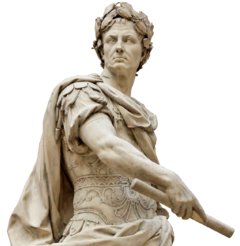

 Trước công nguyên, nhà quân sự người La Mã Julius Ceasar đã nghĩ ra phương pháp mã hóa một bản tin như sau: thay thế mỗi chữ trong bản tin bằng chữ đứng sau nó k vị trí trong bảng chữ cái. Giả sử chọn k = 3, ta có bảng chuyển đổi như sau:
Chữ ban đầu: a b c d e f g h i j k l m n o p q r s t u v w x y z
Chữ thay thế: d e f g h i j k l m n o p q r s t u v w x y z a b c
Giả sử bản tin là: 'attack' thì sau khi mã hóa sẽ có bản mã 'dwwdfn' và Ceasar gửi bản mã cho cấp dưới.
Nhận được bản mã và khóa, cấp dưới của Ceasar chưa biết giải mã làm sao. Bạn hãy giúp họ đi nào.
Dữ liệu nhập:
- Dòng đầu tiên là bản tin đã được mã hóa, chỉ gồm các chữ cái la tinh thường, chiều dài không quá 100 ký tự.
- Dòng thứ 2 là số nguyên thể hiện khóa k (1 ≤ k ≤ 25)
Dữ liệu xuất:
- Bản tin ban đầu.